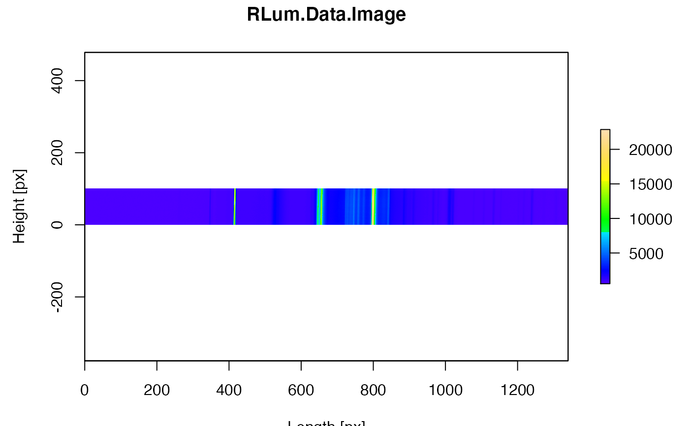

RLum.Data.Image S4 class objectR/plot_RLum.Data.Image.R
plot_RLum.Data.Image.RdThe function provides very basic plot functionality for image data of an RLum.Data.Image object. For more sophisticated plotting it is recommended to use other very powerful packages for image processing.
Details on the plot functions
Supported plot types:
plot.type = "plot.raster"
Uses the standard plot function of R graphics::image. If wanted, the image
is enhanced, using the argument stretch. Possible values are hist, lin, and
NULL. The latter does nothing. The argument useRaster = TRUE is used by default, but
can be set to FALSE.
plot.type = "contour"
This uses the function graphics::contour
plot_RLum.Data.Image(
object,
frames = NULL,
par.local = TRUE,
plot.type = "plot.raster",
...
)RLum.Data.Image (required): S4
object of class RLum.Data.Image
numeric (optional): sets the frames to be set, by default all frames are plotted. Can be sequence of numbers, as long as the frame number is valid.
logical (with default): use local graphical
parameters for plotting, e.g. the plot is shown in one column and one row.
If par.local = FALSE global parameters are inherited.
character (with default): plot types.
Supported types are plot.raster, contour
further arguments and graphical parameters that will be passed
to the specific plot functions. Standard supported parameters are xlim, ylim, zlim,
xlab, ylab, main, legend (TRUE or FALSE), col, cex, axes (TRUE or FALSE),
zlim_image (adjust the z-scale over different images), stretch
Returns a plot
The axes limitations (xlim, zlim, zlim) work directly on the object,
so that regardless of the chosen limits the image parameters can be adjusted for
best visibility. However, in particular for z-scale limitations this is not always
wanted, please use zlim_image to maintain a particular value range over a
series of images.
0.2.1
Kreutzer, S., 2024. plot_RLum.Data.Image(): Plot function for an RLum.Data.Image S4 class object. Function version 0.2.1. In: Kreutzer, S., Burow, C., Dietze, M., Fuchs, M.C., Schmidt, C., Fischer, M., Friedrich, J., Mercier, N., Philippe, A., Riedesel, S., Autzen, M., Mittelstrass, D., Gray, H.J., Galharret, J., 2024. Luminescence: Comprehensive Luminescence Dating Data Analysis. R package version 0.9.24.9000-106. https://CRAN.R-project.org/package=Luminescence
##load data
data(ExampleData.RLum.Data.Image, envir = environment())
##plot data
plot_RLum.Data.Image(ExampleData.RLum.Data.Image)
